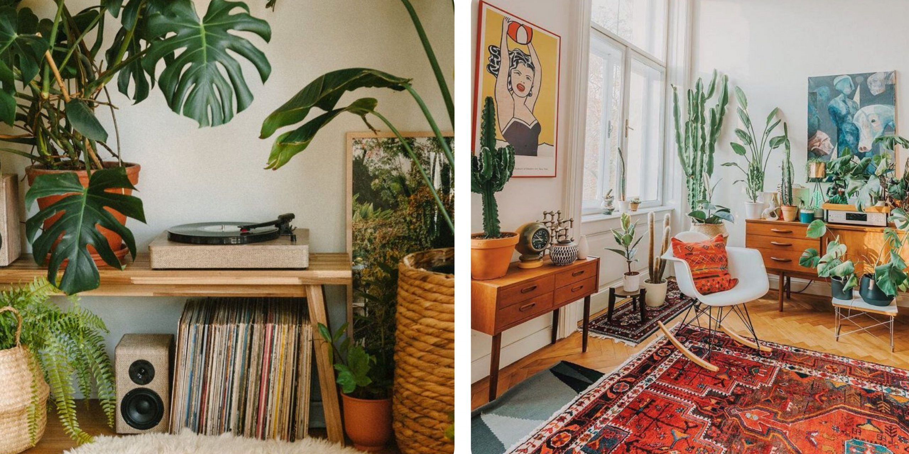
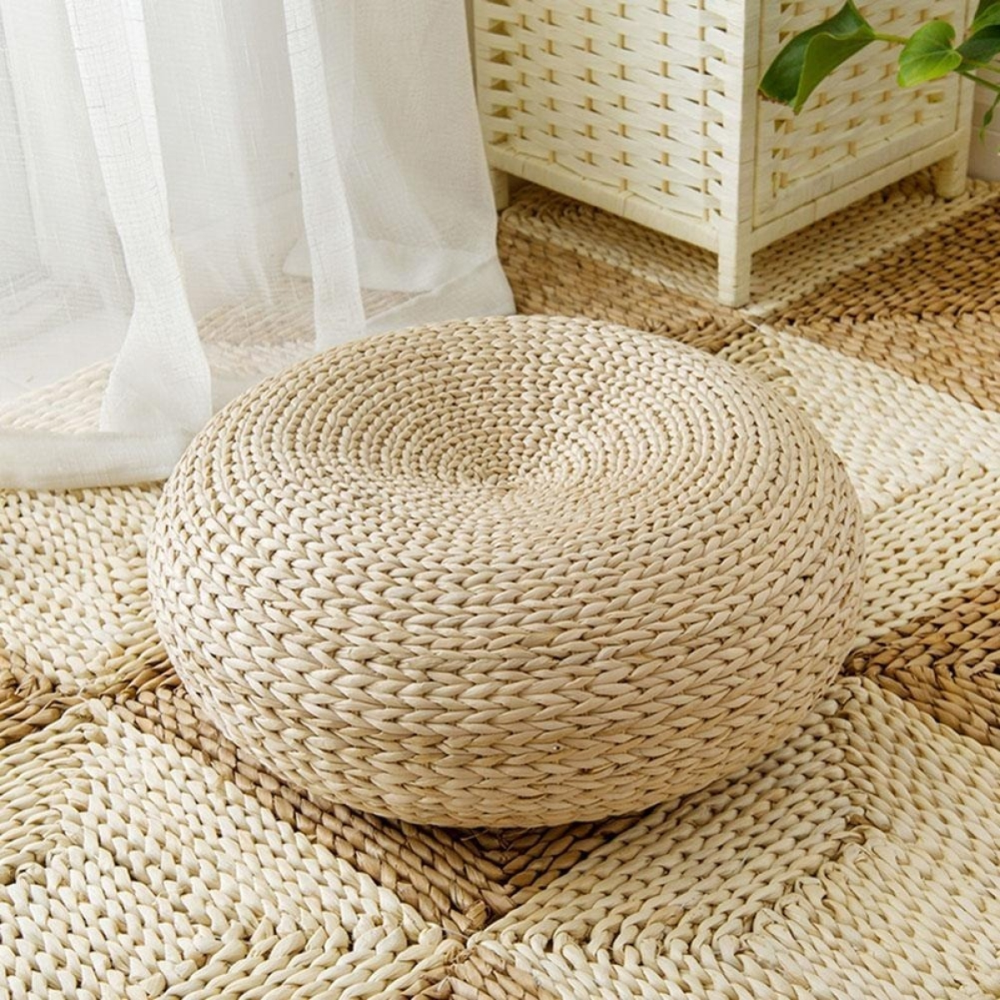
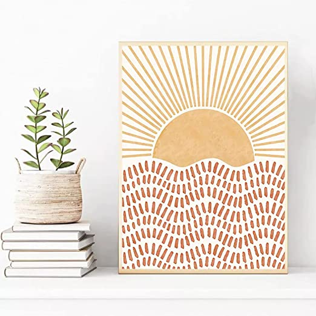
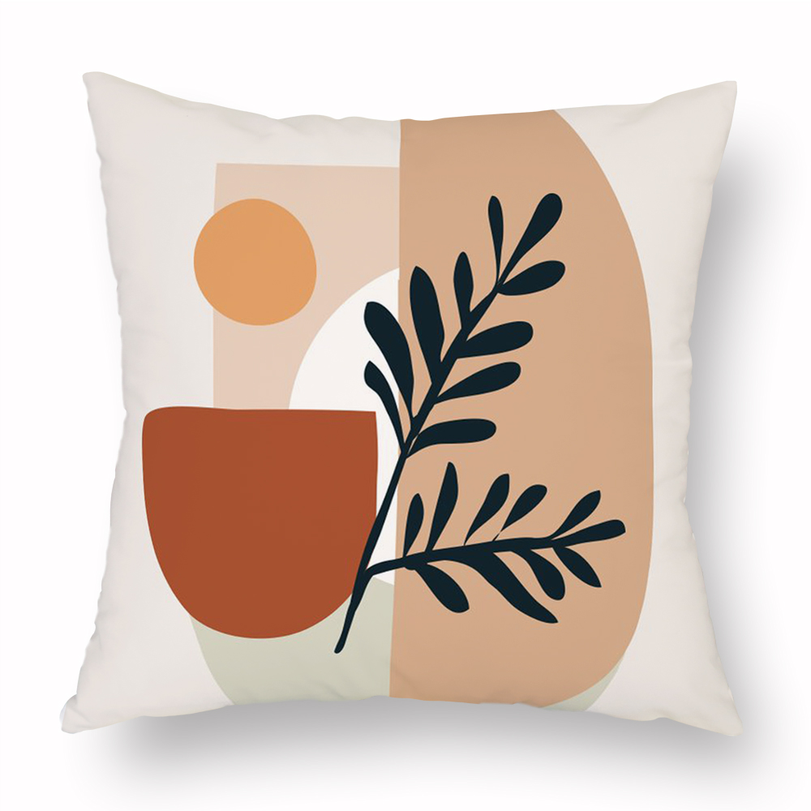
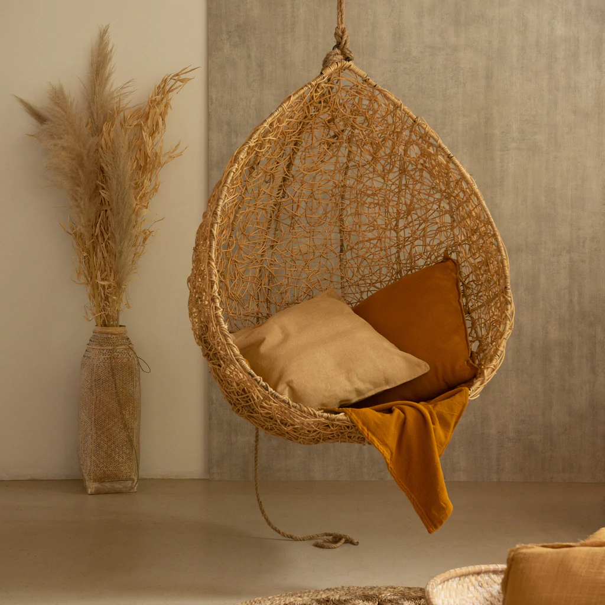
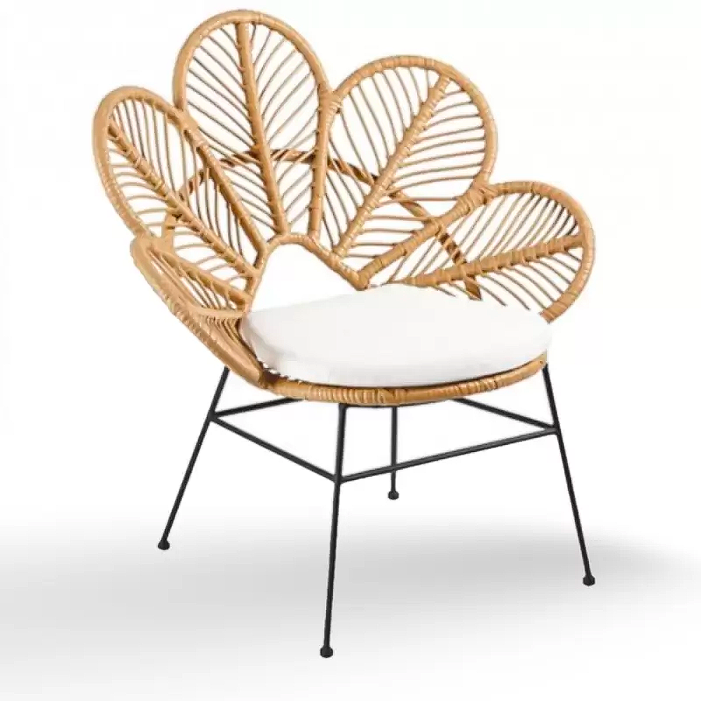

Boho Chic
La tendencia boho, caracterizada por el uso de
colores vibrantes, la fusión de culturas y la mezcla de estilos.
Originado en los años cincuenta, la tendencia boho suele mezclar los estilos estilo hippie,
étnico y oriental para crear ambientes únicos, acentuados por el uso de diversos patrones y
texturas, acabados rústicos y piezas vintage.
Adaptar el estilo boho a tu hogar es sencillo,
siempre y cuando conozcas las claves para evitar que este se vea exagerado o sin sentido. A
continuación, enlistamos algunos consejos para lograrlo:
Colores y más colores
Una de las formas de adaptar la tendencia boho en tu hogar es incorporar distintas
tonalidades: colores intensos, alegres, vibrantes. La finalidad es que estos convivan con
naturalidad en un solo espacio para crear una atmósfera única.
Mezcla patrones y texturas distintas
Otra de las claves para incorporar el estilo boho en tu hogar es mezclar y combinar los
colores brillantes con patrones y texturas distintas. Puedes mezclar estampados florales,
paisley, étnicos, estampados tribales y patrones geométricos.
Para que el resultado de esta mezcla no resulte caótico, una opción es apostar por una base
neutra en las paredes, característica del estilo boho chic. De esta manera, la mezcla de
colores, patrones y texturas dará vida a la estancia.
Acabados naturales y rústicos
Los acabados naturales y rústicos son básicos para incorporar el estilo boho en tu hogar, al
ser una influencia hippie de los años sesenta y setenta. Los muebles de materiales naturales
o crudos como el cáñamo, el sisal, la madera y el ratán ayudarán a crear este estilo.
También, la decoración de paredes con tejidos, macramé o alfombras de sisal son muy
populares, así como el uso de elementos como reposapiés de cuero, una escalera decorativa o
lámparas vintage.
Alfombras
Otra de las claves para adaptar la tendencia boho en tu hogar, son las alfombras, ya que los
suelos se suelen decorar con textiles de diferentes diseños y texturas. Así, no solo harás
más cálido el ambiente, sino que la pisada será más suave.
Cojines
Al igual que las alfombras, los cojines son un elemento decorativo para incorporar la
tendencia boho en tu hogar. Ya sea en el sofá, en la cama o en el suelo, estos sirven para
tumbarse o sentarse de manera informal y relajada. Puedes combinar diseños de diferentes
formas, tamaños y estampados, entre más, mejor.
Muebles vintage
Los muebles vintage son una de las claves del estilo boho, ya que, cuanto más desgastados y
viejos, mejor. Estas piezas suelen ser las grandes protagonistas de este estilo decorativo,
solamente debes cuidar que no sean demasiadas. Un menor número de muebles, pero de un tamaño
considerable, lucirán más.
Objetos únicos
Por último, los objetos y piezas únicas son algo que no puede faltar para incorporar el
estilo boho en tu hogar. Dado que este estilo celebra las diferentes culturas y etnias del
mundo, las piezas decorativas y recuerdos de viajes son perfectas para complementar este
estilo.
se presta a la utilización de un gran abanico de
colores (azules, naranjas, rojos, marrones, blancos, grises, etc.), así como a diferentes
estampados que ayudan a crear ambientes repletos de personalidad. Los textiles juegan un
papel muy importante. Están presentes en cojines (utilizados a veces para sentarse en suelo,
emulando a la cultura árabe), alfombras, tapizados de muebles, mantas para los sofás o, por
supuesto, cortinas, que en muchas ocasiones actúan incluso como puertas de interior. No en
vano, el estilo bohemio apuesta por soluciones improvisadas, como un montón de maletas
apiladas a modo de mesita de noche, palets habilitados como mesas de centro y, en
definitiva, toda clase de recursos DIY. Todo ello convierte las decoraciones bohemias en
espacios cálidos y acogedores.
Todo lo que necesitas para una sala Boho de revista

Espejo de macramé

Puff Boho

Cuadros Terra

Alfombra Boho

Hamaca Bohemia

Sillón Hippie